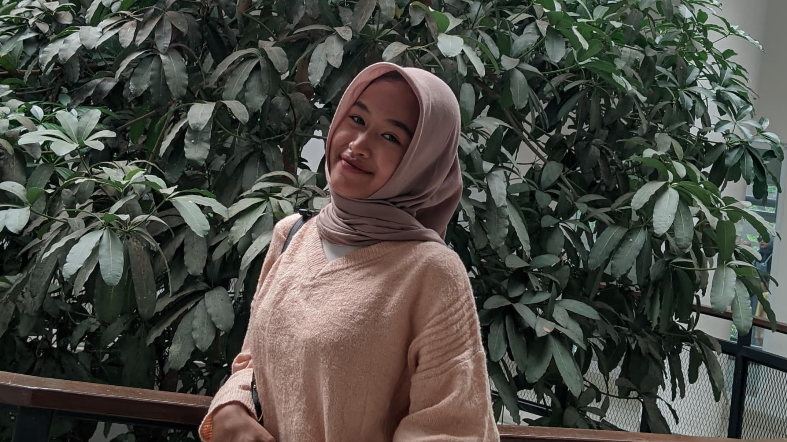
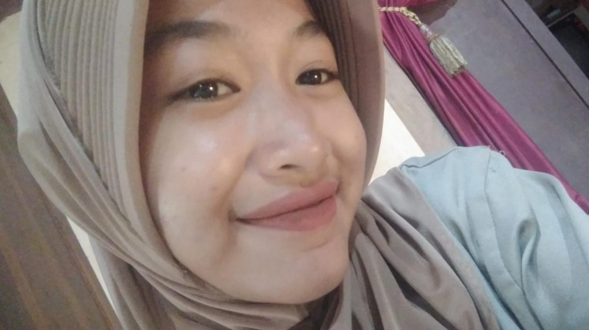

Galeri Cinta Kita






Selamat datang dihalaman yang penuh kasih sayang,Sayangku!!.
Ketika aku bertanya kepadamu tentang cinta Kau melihat langit membentang lapang Menyerahkan diri untuk dinikmati, tapi menolak untuk dimilikiKetika kau bertanya kepadaku tentang cinta, Aku melihat nasib manusia Terkutuk hidup di bumi Bersama jangkauan lengan mereka yang pendek Dan kemauan mereka yang panjangKetika aku bertanya kepadamu tentang cinta, Kau bayangkan aku seekor burung kecil yang murung Bersusah payah terbang mencari tempat sembunyi Dari mata peluru para pemburuKetika kau bertanya kepadaku tentang cinta Aku bayangkan kau satu-satunya pohon yang tersisa Kau kesepian dan mematahkan cabang-cabang sendiriKetika ada yang bertanya tentang cinta, Apakah sungguh yang dibutuhkan adalah kemewahan kata-kataatau cukup ketidaksempurnaan kita?
"Aku mencintaimu lebih dari kata-kata bisa ungkapkan."
"Setiap detik bersamamu adalah momen yang paling indah dalam hidupku."
"Hanya denganmu, dunia terasa sempurna."
"Kau adalah mimpiku yang menjadi kenyataan setiap hari."
"Dalam matamu, aku menemukan keindahan yang tak terbatas."
"Cintaku padamu tak akan pernah pudar, seperti bintang yang tetap bersinar di langit."